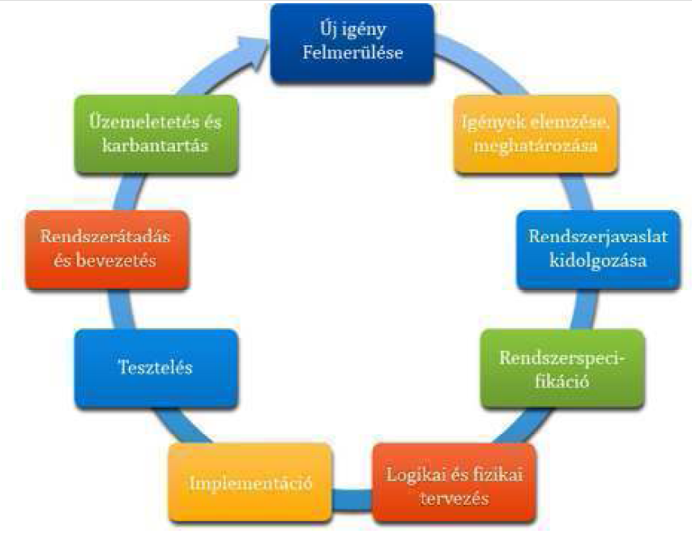

A szoftver √©letciklus (Software Development Life Cycle (SDLC)) a szoftverrel egy idős fogalom. Ha √°tadunk egy szoftvert a felhaszn√°l√≥knak, akkor a felhaszn√°l√≥k előbb vagy ut√≥bb √∫jabb ig√©nyekkel √°llnak elő, ami a szoftver tov√°bbfejleszt√©s√©t teszi sz√ºks√©gess√©. Teh√°t egy szoftver soha sincs k√©sz, ciklikusan meg-meg√∫jul. Ezt nevezz√ºk √©letciklusnak.
Az √©letciklus l√©p√©seit a m√≥dszertanok hat√°rozz√°k meg. Ezeket k√©sőbb fejtj√ºk ki. Itt egy √°ltal√°nos √©letciklust tekint√ºnk √°t.
A szoftverfejleszt√©s √©letciklusa (z√°r√≥jelben a legfontosabb elk√©sz√≠tendő term√©kek):
A felhasználókban új igény merül fel.
Az igények, követelmények elemzése, meghatározása (követelmény specifikáció).
Rendszerjavaslat kidolgoz√°sa (funkcion√°lis specifik√°ci√≥, szerződ√©sk√∂t√©s).
Rendszerspecifikáció (megvalósíthatósági tanulmány, nagyvonalú rendszerterv).
Logikai és fizikai tervezés (logikai- és fizikai rendszerterv).
Implementáció (szoftver).
Tesztelés (tesztterv, tesztesetek, teszt napló, validált szoftver).
Rendszerátadás és bevezetés (felhasználói dokumentáció).
‹zemeletet√©s √©s karbantart√°s (rendszeres ment√©s).
A felhasználókban új igény merül fel.

. ábra életciklus
L√°that√≥, hogy az első l√©p√©s √©s az utols√≥ ugyanaz. Ez biztos√≠tja a ciklikuss√°got. Elvileg egy hasznos szoftvernek v√©gtelen az √©letciklusa. Gyakorlatilag a szoftver √©s fut√°si k√∂rnyezete el√∂regszik. Előbb-ut√≥bb m√°r nem lesz programoz√≥, aki ismern√© a programoz√°si nyelvet, amin √≠r√≥dott (ilyen probl√©ma van manaps√°g a COBOL programokkal), a futtat√≥ oper√°ci√≥s rendszerhez nincsenek friss√≠t√©sek, a meghib√°sodott hardver elemeket nem lehet p√≥tolni. Az ilyen IT rendszereket h√≠vjuk „legacy system”-nek (ki√∂regedett, hagyat√©k rendszernek). Valahol itt van v√©ge az √©letciklusnak. Az √©letciklus egyes l√©p√©seit r√©szletesebben is kifejtj√ºk.